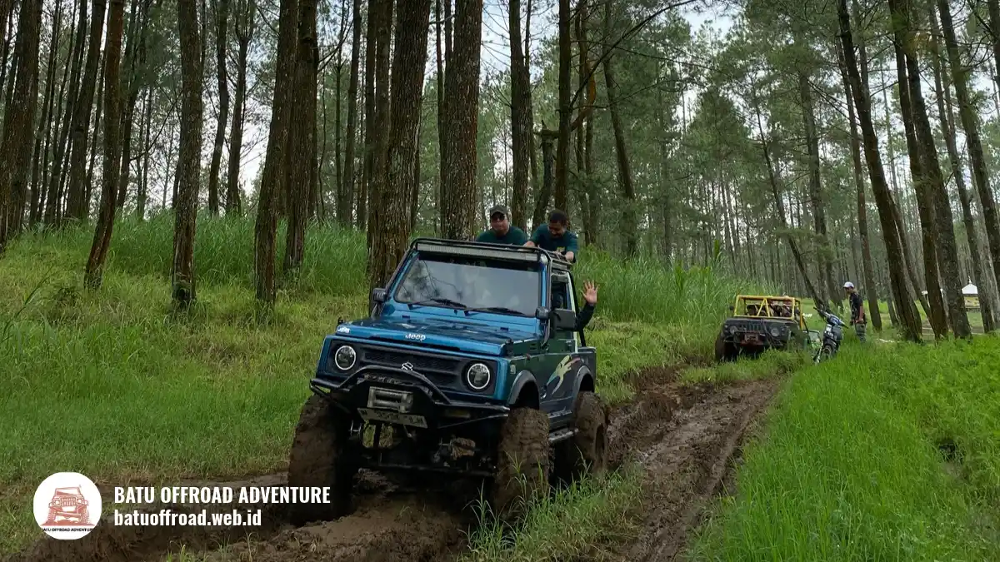

Rute dan Paket Jeep Offroad Coban Talun Batu
Offroad Coban Talun adalah wisata Jeep 4x4 yang menyusuri jalur tanah dan hutan di sekitar Coban Talun, Kota Batu, dengan driver berpengalaman. Pilihan rutenya meliputi short, medium, dan long trip, dengan durasi sekitar 2 sampai 4 jam. Cocok untuk keluarga, pemula, dan rombongan kecil. Booking dilakukan lewat WhatsApp +62 812-3398-9707.
Mengenal Coban Talun dan Offroad di Sekitarnya
Kota Batu punya banyak tempat yang layak dikunjungi, dan Coban Talun termasuk yang paling sering dicari orang yang ingin merasakan suasana alam yang masih terasa asli. Air terjun ini berada di kawasan perbukitan yang dikelilingi pepohonan, dan perjalanan menuju lokasinya sudah menjadi bagian dari pengalaman.
Justru di situlah offroad menjadi pilihan yang menarik: alih-alih hanya berjalan kaki atau naik kendaraan biasa, peserta duduk di Jeep 4x4 dan melewati jalur tanah, tanjakan, serta jalan yang berkelok.
Offroad Coban Talun bukan sekadar mengendarai kendaraan di tanah becek. Ada rute yang sudah diatur, ada driver yang paham kondisi jalur, dan ada waktu untuk berhenti di titik-titik yang layak difoto.
Bagi calon peserta yang belum pernah ikut offroad, pilihan seperti ini memberi gambaran yang jelas tentang apa yang akan dialami, tanpa perlu menembak-nebak.
Artikel ini menjadi pintu masuk untuk semua hal tentang offroad Coban Talun. Di sini Anda akan menemukan gambaran umum pengalamannya, pilihan rute, siapa yang cocok ikut, persiapan yang perlu dilakukan, hingga cara memesan.
Untuk detail yang lebih spesifik, ada beberapa artikel pendukung yang bisa dibaca setelah ini.
Apa yang Dialami Saat Offroad Coban Talun
Perjalanan dimulai dari titik kumpul yang sudah disepakati. Sebelum berangkat, peserta mendapatkan briefing singkat dari driver: cara duduk yang aman, pegangan yang benar, dan apa yang harus dilakukan jika kendaraan harus berhenti mendadak.
Briefing ini penting, terutama bagi peserta yang baru pertama kali naik Jeep di medan tanah.
Setelah itu, Jeep mulai menyusuri jalur. Medannya bervariasi. Ada bagian yang relatif datar dengan permukaan tanah padat, ada tanjakan yang membuat badan sedikit condong ke depan, dan ada bagian yang licin jika cuaca habis hujan. Driver akan mengatur kecepatan sesuai kondisi, sehingga peserta bisa menikmati pemandangan tanpa merasa terburu-buru.
Di sepanjang rute, peserta akan melewati area dengan hutan pinus, kebun apel, kebun sayur, serta aliran Sungai Coban Talun. Titik-titik ini memberi suasana yang berbeda di setiap bagian perjalanan.
Beberapa spot dipilih karena pemandangannya bagus untuk foto, dan driver biasanya memberi waktu berhenti singkat di sana. Lamanya berhenti disesuaikan dengan jadwal dan jumlah peserta.
Di akhir perjalanan, peserta diarahkan ke Coban Talun sebagai tujuan utama. Pengunjung bisa berjalan ke area air terjun, mengambil foto, lalu kembali ke titik kumpul.
Jarak berjalan kaki dari area parkir ke air terjun sekitar 300–500 meter, dengan jalur menurun dan sebagian berupa tangga atau jalan setapak yang dapat licin saat hujan. Gunakan sepatu tertutup dan berjalan dengan hati-hati, terutama jika membawa anak.

Jeep offroad melintasi hutan pinus di Coban Talun.
Pilihan Rute Offroad Coban Talun
Batu Offroad menyediakan beberapa pilihan rute, yang dibedakan dari panjang jalur, jumlah titik yang dilewati, dan tingkat kesulitan medannya. Pembagian ini membantu calon peserta memilih yang sesuai dengan kemampuan dan waktu yang tersedia. Perbedaan utamanya bisa dilihat pada tabel berikut.
| Pilihan | Gambaran jalur | Perkiraan durasi | Tingkat kesulitan | Cocok untuk |
|---|---|---|---|---|
| Short trip | Jalur pendek menuju area Coban Talun, umumnya melewati kebun sayur, hutan pinus, dan Sungai Coban Talun | 2–3 jam | Ringan | Pemula, keluarga, peserta dengan waktu terbatas |
| Medium trip | Jalur sedang dengan tambahan spot foto dan medan tanah yang lebih bervariasi | 3–4 jam | Sedang | Peserta yang ingin pengalaman lebih lengkap |
| Long trip | Jalur lebih panjang melalui Pura Giri Arjuna, kebun apel, Lapangan Jungga, hutan pinus, dan Sungai Coban Talun | 3–4 jam, dapat lebih lama bila ada berhenti foto atau aktivitas tambahan | Sedang sampai menantang | Peserta yang sudah nyaman di medan tanah |
Short trip cocok bagi siapa saja yang ingin merasakan offroad tanpa terlalu lama di jalan. Rutenya relatif singkat, sehingga tidak melelahkan, dan masih cukup untuk menikmati suasana Coban Talun.
Medium trip menambah waktu dan titik berhenti, sehingga peserta punya kesempatan lebih banyak untuk mengambil foto dan menikmati pemandangan di sepanjang jalur. Long trip adalah pilihan bagi peserta yang sudah tahu bahwa mereka menyukai medan yang sedikit lebih berat.
Pemilihan rute sebaiknya mempertimbangkan lebih dari sekadar keinginan. Jika ada anak kecil atau anggota keluarga yang kurang kuat berjalan atau duduk lama, rute yang lebih pendek lebih sesuai.
Jika peserta sudah berpengalaman di jalur tanah, long trip bisa memberi kepuasan lebih. Driver Batu Offroad bisa membantu memberi rekomendasi setelah tahu jumlah peserta dan kondisi mereka.
Kapasitas dan Kendaraan
Setiap Jeep yang digunakan dalam offroad Coban Talun memiliki kapasitas maksimal 3 orang penumpang, belum termasuk driver. Jumlah peserta yang lebih banyak berarti jumlah Jeep yang lebih banyak.
Untuk rombongan, koordinasi jumlah unit dilakukan sejak awal, sehingga semua peserta bisa berangkat bersama dan tidak terpisah terlalu jauh di jalur.
Kendaraan yang digunakan adalah Jeep 4x4 yang dirancang untuk medan seperti ini. Sebelum digunakan, Jeep dicek kondisinya oleh tim. Peserta tidak perlu membawa kendaraan sendiri, cukup datang di titik kumpul dan mengikuti arahan driver.
Siapa yang Cocok Ikut Offroad Coban Talun
Offroad Coban Talun cocok untuk beberapa jenis peserta. Keluarga yang ingin mengisi akhir pekan dengan kegiatan baru biasanya menjadi kelompok terbesar.
Anak-anak yang sudah cukup besar dan didampingi orang tua juga bisa ikut, dengan syarat yang dijelaskan di artikel pendukung khusus keluarga. Pasangan yang ingin pengalaman berbeda, teman-teman yang ingin berkumpul, dan rombongan kantor juga sering memilih rute ini.
Pemula tidak perlu khawatir. Driver akan menjelaskan semuanya sebelum berangkat, dan kecepatan kendaraan disesuaikan dengan kenyamanan peserta. Yang perlu dilakukan hanya mengikuti arahan dan menikmati perjalanan.
Ada beberapa kondisi yang sebaiknya dikonsultasikan lebih dulu. Peserta dengan kondisi kesehatan tertentu, seperti masalah punggung, jantung, atau tekanan darah, disarankan berdiskusi dengan dokter dan menyampaikannya saat memesan.
Ibu hamil juga sebaiknya tidak ikut tanpa persetujuan dokter. Informasi ini membantu tim menentukan rute yang paling aman.
Persiapan Sebelum Berangkat
Persiapan yang baik membuat perjalanan lebih nyaman. Pakaian yang dipakai sebaiknya nyaman, tidak terlalu longgar, dan bisa kotor.
Sepatu tertutup lebih disarankan dibanding sandal, karena jalur bisa licin dan berbatu. Bawa jaket tipis, karena udara di perbukitan Batu bisa lebih dingin dari kota.
Berikut daftar yang bisa dibawa:
- Pakaian ganti dan jaket tipis.
- Sepatu tertutup yang sudah nyaman dipakai.
- Topi atau penutup kepala dan kacamata hitam.
- Tisu basah, air minum pribadi, dan obat pribadi jika diperlukan.
- Plastik untuk barang basah, termasuk ponsel dan dompet.
- Kamera atau ponsel dengan baterai penuh, serta power bank.
Barang berharga sebaiknya tidak dibawa berlebihan. Jika ada barang yang tidak ingin basah atau kotor, simpan dalam kantong kedap air.
Keselamatan dan Briefing
Keselamatan adalah bagian yang paling diperhatikan dalam setiap perjalanan. Sebelum Jeep berjalan, peserta mengikuti briefing singkat yang mencakup cara duduk, pegangan, dan kode komunikasi dengan driver.
Peserta diminta untuk tidak berdiri atau berpindah tempat selama kendaraan bergerak, dan untuk selalu memegang pegangan yang tersedia.
Driver berpengalaman mengenal jalur dengan baik dan tahu kapan harus memelankan laju. Tim juga memeriksa kondisi kendaraan dan cuaca sebelum berangkat.
Jika kondisi jalur dinilai tidak aman, perjalanan bisa diubah atau dijadwal ulang. Rincian Standar Operasional Prosedur (SOP) tersedia di artikel keselamatan terpisah dan bisa diminta sebelum booking.
Setiap Jeep dilengkapi dengan kotak P3K, dan komunikasi antarunit menggunakan radio HT agar tetap terhubung meskipun sinyal ponsel tidak stabil di area hutan atau jalur tanah.
Driver juga membawa jalur evakuasi darurat dan mengikuti prosedur penghentian perjalanan apabila kondisi cuaca atau medan dinilai tidak aman.
Peserta disarankan mengikuti seluruh arahan driver, tetap duduk saat Jeep bergerak, serta tidak melepas tangan dari pegangan di bagian tanjakan, turunan, atau jalur berlumpur.
Anak-anak harus didampingi orang tua dan duduk di posisi yang diarahkan driver.
Cuaca dan Waktu Terbaik
Cuaca di Batu bisa berubah cepat, terutama di sore hari. Hujan membuat jalur menjadi lebih licin dan membutuhkan kehati-hatian ekstra.
Karena itu, tim selalu memantau kondisi sebelum keberangkatan, dan peserta disarankan memeriksa jadwal sehari sebelumnya.
Waktu yang paling sering dipilih adalah pagi sampai siang, saat udara masih segar dan langit biasanya lebih cerah. Pada akhir pekan dan libur panjang, jadwal bisa lebih cepat penuh, sehingga lebih baik memesan beberapa hari sebelumnya.
Untuk rombongan, pemesanan sebaiknya dilakukan lebih awal.
Kebijakan jika hujan atau cuaca tidak memungkinkan dijelaskan saat booking. Tim akan memberi informasi dan opsi jadwal ulang sesuai kebijakan yang berlaku.
Akses dan Titik Kumpul
Titik kumpul berada di area Coban Talun, Tulungrejo, Kecamatan Bumiaji, Kota Batu. Operator umumnya menyediakan dua titik kumpul: Meeting Point 1 di kawasan Coban Talun dan Meeting Point 2 di Rest Area Tulungrejo.
Peserta dapat memilih titik kumpul yang paling mudah dijangkau sesuai arahan tim saat konfirmasi booking.
Dari pusat Kota Batu, perjalanan menuju kawasan Coban Talun umumnya ditempuh sekitar 20–30 menit dengan kendaraan pribadi, tergantung kondisi lalu lintas dan titik kumpul yang dipilih.
Peserta yang datang dari Malang atau Surabaya bisa menanyakan rute terdekat melalui WhatsApp.
Parkir kendaraan pribadi tersedia di area Coban Talun dan Rest Area Tulungrejo. Untuk rombongan dengan bus, akses bus ke titik kumpul perlu dikonfirmasi terlebih dahulu karena ruang manuver dan area parkir bus dapat berbeda di setiap lokasi.
Layanan jemput pada area tertentu, khususnya dari Rest Area Tulungrejo atau Coban Talun, dapat ditanyakan saat booking.
Cara Memesan Offroad Coban Talun
Pemesanan dilakukan lewat WhatsApp Batu Offroad di +62 812-3398-9707. Cukup kirimkan beberapa informasi berikut: tanggal yang diinginkan, jumlah peserta, pilihan rute, dan apakah ada anak kecil atau anggota keluarga yang perlu perhatian khusus.
Tim akan membalas dengan konfirmasi ketersediaan dan informasi yang dibutuhkan.
Untuk rombongan, tim akan menanyakan nama penanggung jawab (PIC), jumlah unit yang dibutuhkan, dan kebutuhan tambahan. Setelah jadwal disepakati, tim memberi konfirmasi tertulis.
Detail pembayaran dan kebijakan pembatalan disampaikan saat konfirmasi. Silakan tanyakan langsung jika ada yang belum jelas.
Kesimpulan
Coban Talun menawarkan pengalaman yang sulit didapat dari kendaraan biasa: suasana alam, jalur tanah yang menantang, dan waktu bersama orang-orang tercinta atau rekan kerja. Jika Anda sudah menemukan rute yang cocok, langkah berikutnya sederhana.
Kirim pesan ke WhatsApp +62 812-3398-9707, sebutkan tanggal dan jumlah peserta, lalu tim Batu Offroad akan membantu menyusun jadwalnya. Tidak perlu persiapan yang rumit untuk memulai.
FAQ
-
Berapa lama perjalanan offroad Coban Talun?
Short trip sekitar 2–3 jam, sedangkan medium dan long trip sekitar 3–4 jam. Durasi final mengikuti rute yang dipilih, jumlah peserta, kondisi medan, serta waktu berhenti untuk foto. -
Apakah offroad Coban Talun aman untuk pemula?
Ya, dengan pendampingan driver berpengalaman dan briefing sebelum berangkat. Pemula disarankan memilih short trip atau medium trip. -
Apakah bisa ikut dengan anak kecil?
Bisa, dengan batas usia dan persyaratan yang disesuaikan oleh operator. Anak harus didampingi orang tua selama perjalanan. Batas usia dikonfirmasi langsung ke tim Batu Offroad saat booking, karena kebijakan usia minimum dan posisi duduk anak dapat berbeda antararmada. -
Berapa orang maksimal dalam satu Jeep?
Maksimal 3 orang penumpang per Jeep, belum termasuk driver. -
Apakah ada toilet dan tempat istirahat?
Toilet, area istirahat, dan fasilitas dasar tersedia di kawasan Coban Talun serta Rest Area Tulungrejo. Ketersediaan toilet di sepanjang jalur offroad terbatas, jadi sebaiknya gunakan fasilitas sebelum keberangkatan. Detail lokasi toilet terdekat dan kondisi fasilitas dikonfirmasi pengelola sebelum terbit. -
Apakah bisa mengatur rute sendiri?
Rute utama sudah diatur, tetapi untuk rombongan atau kebutuhan tertentu bisa dibicarakan lewat WhatsApp. Penyesuaian rute tetap mempertimbangkan kondisi cuaca, medan, dan keselamatan peserta. -
Kalau hujan, bagaimana?
Tim memantau cuaca dan akan memberi informasi jadwal ulang sesuai kebijakan yang berlaku. Hujan dapat membuat jalur lebih licin, sehingga keputusan keberangkatan tetap mengutamakan keselamatan. -
Apakah harus membawa Jeep sendiri?
Tidak. Semua Jeep sudah disediakan beserta driver.
Artikel Terkait